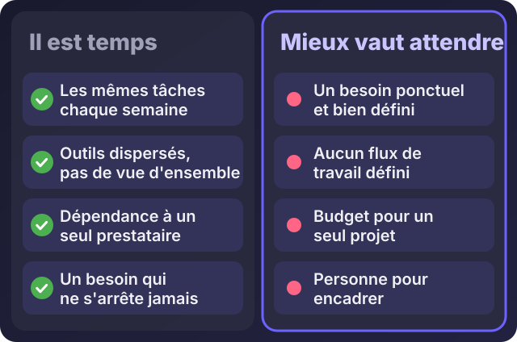
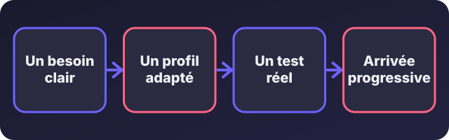

Accueil / Blog / Pour les recruteurs et clients
Pour les recruteurs et clientsPourquoi recruter un développeur dans votre entreprise ? Les signes qui ne trompent pas

Écouter cet article · environ 5 min
« Faut-il recruter un développeur, ou continuer à payer un prestataire quand on en a besoin ? » C'est une question de dirigeant, de responsable des ressources humaines ou de recruteur qu'on me pose de plus en plus. La bonne réponse ne dépend pas de la taille de l'entreprise. Elle dépend de la nature du besoin.
Je suis moi-même développeur, donc mon avis n'est pas neutre. C'est pour cela que je commence par vous dire quand ne pas recruter.
Les cinq signes qu'il est temps de recruter
- Les mêmes tâches manuelles reviennent chaque semaine. Relances, saisies, recopie d'un fichier à l'autre, validations par message. Si quelqu'un y passe des heures sans jamais finir, un développeur peut les automatiser une fois pour toutes.
- Vos outils sont dispersés. Un peu d'Excel, beaucoup de WhatsApp, quelques papiers. Personne n'a la vue d'ensemble, et on perd du temps à chercher où en est chaque dossier.
- Vous dépendez d'une seule personne. Un prestataire ou un collaborateur est le seul à savoir comment « ça marche ». S'il part, tout s'arrête.
- Le besoin ne s'arrête jamais. Un ajustement chaque mois, un nouveau service, une demande de plus. Payer un prestataire à chaque modification finit par coûter plus qu'un poste.
- Les erreurs coûtent cher. Litiges, retards, oublis, factures non relancées. Si ce que vous perdez ainsi dépasse le coût d'un poste, la question est réglée.

Ce qu'un profil full-stack apporte
Un développeur « full-stack » sait travailler sur toutes les couches d'un outil : ce que voit l'utilisateur, la logique qui tourne derrière, la base de données où tout est rangé. Concrètement, il peut :
- Comprendre le besoin, le transformer en outil, l'installer et former les utilisateurs, sans avoir besoin de plusieurs prestataires pour un petit projet.
- Relier ce qui est séparé : un site, un tableau de suivi, une messagerie, un outil de facturation.
- Automatiser les tâches répétitives, par exemple avec des tableaux et des scripts qui font le travail à la bonne date.
- Maintenir et corriger au quotidien, sans attendre qu'un prestataire soit disponible.
- Parler le langage du métier : un bon développeur ne demande pas « quelle fonction voulez-vous ? » mais « où perdez-vous du temps ? ».
Ce n'est pas de la magie : c'est quelqu'un qui connaît votre fonctionnement de l'intérieur, et c'est ce qu'un prestataire de passage a plus de mal à faire.
Ce qu'il faut savoir avant de recruter
- Un développeur seul ne remplace pas une équipe. Pour un gros projet, il faudra plus d'une personne, ou des renforts ponctuels.
- Il lui faut un responsable qui fixe les priorités, sinon il travaille sur ce qui lui semble urgent plutôt que sur ce qui l'est pour l'entreprise.
- Il a besoin d'accès et de moyens : un poste correct, une connexion, des abonnements, des sauvegardes.
- Il faut du temps pour qu'il comprenne votre activité. Les premiers mois servent à l'observer, pas à produire.
- Et l'IA ? Elle accélère un bon développeur, elle ne remplace pas celui qui comprend votre métier. Demandez-lui comment il l'utilise et comment il vérifie ce qu'elle produit.
Du besoin à l'intégration
Un bon recrutement suit quatre étapes :

- Un besoin clair. Écrivez en trois lignes ce que le développeur devra faire dans les six premiers mois. Si vous n'y arrivez pas, vous n'êtes pas prêt à recruter.
- Un profil adapté. Cherchez quelqu'un qui a déjà livré des projets semblables, pas seulement quelqu'un qui connaît beaucoup de technologies.
- Un test réel. Un petit exercice ou une discussion sur un cas concret, plutôt que des questions de théorie. On en parle dans l'article suivant.
- Une arrivée progressive. Un premier projet court, avec un objectif clair, avant de lui confier les systèmes critiques.
Quand attendre
Ne recrutez pas encore si :
- votre besoin est ponctuel et bien défini : un site, une application, une automatisation. Un prestataire sera plus économique ;
- vous n'avez aucun flux de travail défini : un développeur ne peut pas organiser ce qui n'est pas décrit ;
- vous avez le budget d'un projet, pas d'un poste ;
- personne ne peut encadrer le développeur.
Si vous hésitez
Décrivez-moi votre activité et ce qui vous prend du temps. Je vous dirai honnêtement si un recrutement a du sens, si un prestataire suffit, ou si un simple tableau règle déjà le problème. Je préfère vous dire d'attendre que de vous voir recruter trop tôt.